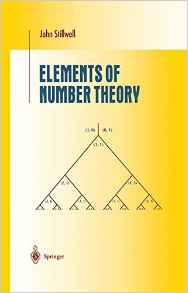

MATH 4400/6400: Number Theory
MWF, 12:20-1:10 PM, Boyd Graduate Studies Building, Room 322
MW 2:20-3:20
Th 3-4
and by appointment
Current assignments/other course materials
- Final exam review sheetPDF
- Homework assignment #8due 4/26PDF
- Homework assignment #7due 4/19PDF
- Midterm #2 review sheetPDF
- Homework assignment #6due 3/22PDF
- Homework assignment #5due 3/3PDF
- Midterm #1 review sheetPDF
- Homework assignment #4due 2/15PDF
- Homework assignment #3due 2/8PDF
- Homework assignment #2due 2/1PDF
- Homework assignment #1due
1/201/22PDF
Course summary to date (reverse chronological order)
- 4/26 Proof that $N\pi \ne p^2$, and hence $N\pi =p$. Deduction that $p$ is a sum of four squares. Statement of Jacobi's formula for the number of representations of $n$ as a sum of four squares. Statement of Gauss's three squares theorem and deduction of Gauss's triangular numbers theorem.
- 4/24 All right-ideals in the ring of HI quaternions are principal. If $p$ is an odd prime, then $p \mid x^2+y^2+1$ for some $x, y \in \mathbb{Z}$. If $p \mid x^2+y^2+1$, and the right-ideal generated by $p$ and $x+yi+j$ is generated by the single element $\pi$, then $N\pi = 1, p$, or $p^2$. Proof that $N\pi \ne 1$.
- 4/21 Definition of the Hurwitz Integral (HI) quaternions. The HI quaternions form a subring of $\mathbb{H}$. The norm of an HI quaternion is an ordinary integer. Proof of the division algorithm for HI quaternions. Examples.
- 4/19 All nonzero elements of $\mathbb{H}$ are units in $\mathbb{H}$. Definition of Lipschitz Integral (LI) quaternions. The LI quaternions form a subring of $\mathbb{H}$. The set of sums of four squares is closed under multiplication. Failure of the division algorithm for LI quaternions.
- 4/14 Statement of Lagrange's four squares theorem. The real quaternions ($\mathbb{H}$): Definition as a real vector space, the ring structure on $\mathbb{H}$, conjugation, the norm map on $\mathbb{H}$.
- 4/12 Proof that $r^{\ast}(mn) = r^{\ast}(m) r^{\ast}(n)$ when $m$ and $n$ are relatively prime. Discussion of the counting function of numbers that are sums of two squares.
- 4/10 Determination of $r^{\ast}(p^k)$ for all prime powers $p^k$.
- 4/7 Outline of the proof of Jacobi's formula for the number of representations of $n$ as a sum of two squares. Reformulation of the problem in terms of counting ideals. Reinterpretation of the factorization theory for $\mathbb{Z}[i]$ in terms of factorizations of ideals.
- 4/5 Proof using $\mathbb{Z}[i]$ that integers that are sums of two squares have all prime factors $\equiv 3\pmod{4}$ showing up to an even power. Start of discussion of computing the number of representations as a sum of two squares.
- 4/3 Characterization of positive integers that are sums of two squares: Statement and proof.
- 3/31 Exam #2.
- 3/29 Practice problems for Exam #2 (now added to review sheet above).
- 3/27 Completion of the proof of Chebyshev's upper bound. Comparison of $x/\log x$ vs. $\mathrm{li}(x)$ for approximating $\pi(x)$. Statement of the Riemann Hypothesis.
- 3/24 Completion of the proof of Chebyshev's lower bound. Start of the proof of Chebyshev's upper bound.
- 3/22 Statement of Chebyshev's bounds on $\pi(x)$. The highest power of a prime dividing $n!$. Start of the proof of Chebyshev's lower bound on $\pi(x)$.
- 3/20 Proof that $\sum_{p\text{ prime}} 1/p$ diverges. Deduction that $\pi(x) > \sqrt{x}$ for arbitrarily large values of $x$. Exploration of strengthenings: we can prove $\pi(x) > x/(\log{x})^{1.001}$ for arbitrarily large $x$ with this method, but not $\pi(x) > x/(\log{x})^{0.999}$. Statement of the prime number theorem.
- 3/17 Discussion of Euclid--Mullin sequences. Proof that the $n$th prime is at most $2^{2^{n-1}}$, and that $\pi(x) > \ln\ln x$. Proof that $\pi(x) > \ln(x)/(2\ln 2)$.
- 3/15 Proof that in a finite cyclic group, there are at most $d$ solutions to $x^d=\mathbb{1}$, for every $d$. Proof that there are more than 2 square roots of $1$ in $U(\mathbb{Z}_m)$ unless $m=p^k$ ($p$ an odd prime, $k$ a positive integer), $m=2p^k$ (for the same values of $p, k$), or $m=1,2,4$. Start of discussion of the distribution of primes, including the definition of the prime counting function $\pi(x)$.
- 3/13 Completion of the proof that when $p$ is an odd prime and $k \in \mathbb{Z}^{+}$, the group $U(\mathbb{Z}_{p^k})$ has an element of order $p^{k-1}$. Proof that $U(\mathbb{Z}_{p^k})$ is cyclic (for the same $p$ and $k$). Statement that $U(\mathbb{Z}_{2p^k})$ is also cyclic (for the same $p,k$), since $U(\mathbb{Z}_{p^k}) \cong U(\mathbb{Z}_{2p^k})$ (see HW). Outline of a proof that if $R \cong S$, then $U(R) \cong U(S)$. Deduction that $U(\mathbb{Z}_{mn}) \cong U(\mathbb{Z}_m\times \mathbb{Z}_n)$ when $\gcd(m,n)=1$.
- 3/3 Every order in a finite abelian group divides the maximal order. Proof that $U(\mathbb{Z}_p)$ is cyclic. When $p$ is an odd prime, and $k \in \mathbb{Z}^{+}$, the group $U(\mathbb{Z}_{p^k})$ has an element of order $p-1$. Start of the proof that the same group has an element of order $p^{k-1}$.
- 3/1 If $x$ has order $n$, then $\langle x\rangle$ is the $n$-element set $\{1,x,x^2,\dots,x^{n-1}\}$. $G$ is cyclic if and only if there is an element of order $n$. Examples of order sets. If there is an element of order $n$, then there is one of every order dividing $n$. Coprime orders lemma. If $x, y$ have orders $m$ and $n$, there is an element of order $\mathrm{lcm}[m,n]$.
- 2/27 Definition of the order of $a$ modulo $m$. Examples of orders modulo $23$. If $p \mid 2^{2^n}+1$, then $2$ has order $2^{n+1}$ modulo $p$, and so $p \equiv 1\pmod{2^{n+1}}$. Definition of a cyclic subgroup/cyclic group. Definition of a subgroup. Criterion of a subset to be a subgroup.
- 2/24 Definition of an abelian group. Euler's theorem for a finite abelian group. Definition of the order of an element. If $x$ has order $m$ and $x^n= \textbf{1}$, then $m\mid n$.
- 2/22 Proofs of the harder properties of the Jacobi symbol, including the reciprocity law. Start of discussion of when $U(\mathbb{Z}_m)$ is cyclic.
- 2/20 Definition of the Jacobi symbol. Easy properties. Examples. Interpreting the Jacobi symbol (in terms of whether $x^2\equiv A \bmod{P}$ has a solution).
- 2/17 Midterm #1.
- 2/15 Proof that if $P, Q$ are odd, relatively prime positive integers, then $\sum_{k=1}^{(P-1)/2}[Qk/P] + \sum_{\ell=1}^{(Q-1)/2}[P\ell/Q] = (P-1)/2 \cdot (Q-1)/2$. Completion of the proof of the law of quadratic reciprocity.
- 2/13 Gauss's lemma, version 2.0. A similar formula for $(D|p)$ for odd $p$, with the factor of $2$ removed. Discussion of relation with lattice point counts.
- 2/10 Completion of determination of $(6|p)$. Calculation of $(50|p)$. Illustration of how to compute $(D|p)$ without classifying all $p$ with $(D|p)=1$ (specific example of $(44|131)$).
- 2/8 Proof by Gauss's lemma that $(3|p)=1$ for primes $p\equiv 1\pmod{12}$. Statement of the law of quadratic reciprocity. Determination of primes $p$ for which $(5|p)=1$. Complete determination of primes $p$ for which $(3|p)=1$. Start of determination of primes $p$ for which $(6|p)=1$.
- 2/6 Deduction of when $-1$ is a square modulo $p$ from Euler's criterion. Gauss's lemma and its proof. Example of computing $(5|13)$ via Gauss's lemma. Determination of $(2|p)$ using Gauss's lemma.
- 2/3 Proof that there are $\frac{p-1}{2}$ nonzero squares modulo $p$ for all odd primes $p$. Euler's criterion for quadratic residues and its proof. Example of Euler's criterion to compute whether $2$ is a square modulo $p=257$. Definition of Legendre's symbol. Proof that $(ab|p) = (a|p) (b|p)$.
- 2/1 Chinese remainder theorem, v1 (simultaneous congruences) vs v2 (isomorphism between $\mathbb{Z}_{mn}$ and $\mathbb{Z}_m\times \mathbb{Z}_n$). Application to Euler's $\phi$-function. Review of linear congruences. Introduction to quadratic congruences.
- 1/30 Proof of Euler's theorem. Proof of Wilson's theorem, by establishing the identity $x^{p-1}-\bar{1}=(x+\overline{1})\cdots(x+\overline{p-1})$ in $\mathbb{Z}_p[x]$. Proof that $p \mid x^2+1$ for some $x \in \mathbb{Z}$ $\Longleftrightarrow$ $p=2$ or $p\equiv 1\pmod{4}$.
- 1/27 Failure of Euclid's lemma in $\mathbb{Z}[\sqrt{-5}]$. Review of facts about $\mathbb{Z}_m$ from MATH 4000, including the characterization of units in $\mathbb{Z}_m$. Statement of Fermat's little theorem and Euler's generalization.
- 1/25 Elements of prime norm are irreducible in $\mathbb{Z}[i]$ (but converse is false). Every irreducible in $\mathbb{Z}[i]$ divides some prime number in $\mathbb{Z}$. A prime number is either irreducible or factors as $\pi \bar{\pi}$, where $\pi$ and $\bar{\pi}$ are irreducible in $\mathbb{Z}[i]$; the latter occurs if and only if $p$ can be written as a sum of two squares, as well as if and only if $p \mid x^2+1$ for some $x \in \mathbb{Z}$.
- 1/23 Definition of $\mathbb{Z}[i]$. $\mathbb{Z}[i]$ is an integral domain. Basic properties of the norm map. Existence of a division algorithm in $\mathbb{Z}[i]$ (hence $\mathbb{Z}[i]$ is a Euclidean domain). Classification of units in $\mathbb{Z}[i]$.
- 1/20 Every gcd of $\alpha, \beta$ in a Euclidean domain has the form $\alpha x +\beta y$. Relatively prime elements. Euclid's lemma. Completion of the proof of unique factorization in Euclidean domains. Remark that our proof of unique factorization works just as well in any principal ideal domain.
- 1/18 Definition of an irreducible element. All nonzero nonunits in a Euclidean domain have an irreducible factor. All nonzero nonunits in a Euclidean domain can be written as a finite product of irreducibles. Definition of the gcd. Existence of the gcd for any pair of elements in a Euclidean domain. Uniqueness of the gcd up to units.
- 1/13 Completion of proof of unique factorization in $\mathbb{Z}$. Review of the statement of unique factorization in $F[x]$, with $F$ a field. Definition of a Euclidean domain. In a Euclidean domain, all ideals are generated by a single element. Statement that every ascending chain of ideals stabilizes in a Euclidean domain.
- 1/11Reformulation of unique factorization. Definition and existence of greatest common divisors, as well as their uniqueness up to sign. Prove that if $a\mid bc$ and $a$ and $b$ are relatively prime, then $a\mid b$. Euclid's lemma. Proof that $\mathrm{ord}_p(ab) = \mathrm{ord}_p(a) + \mathrm{ord}_p(b)$.
- 1/9Definition of prime numbers. There are infinitely many primes. Review of the proof of the unique factorization theorem from MATH 4000.
- 1/6Read and print syllabus; fill out survey (online)
Course summary
Number theory is the study of of the positive integers 1, 2, 3, $\dots$ and associated objects. It is tempting to assume that something as simple as the counting numbers must be rather well understood. But this is far from the case! Indeed, number theory owes much of its charm to the wealth of easily-stated problems -- possible to explain to middle-school age children -- which have so far defied solution, despite hundreds of years of effort by the world's greatest mathematicians.
This course is designed to introduce you to the fundamental results, with particular attention paid to the pathbreaking accomplishments of the 18th and 19th centuries. We will begin by reviewing the theory of prime factorization and congruences that you were introduced to in MATH 4000. One of the central early topics in MATH 4000 is the study of linear congruences: $ax\equiv b\pmod{m}$. One of the major topics of this course will be the study of quadratic congruences. In particular, we will be interested in understanding the following problem: Given an integer $a$, characterize the primes $p$ for which $x^2\equiv a\pmod{p}$ has a solution. For instance if $a=3$, this is solvable when $p=11$ and $p=13$, but not when $p=5$ or $p=7$; what is the general rule? The answer will come out of a beautiful and deep result of Gauss, the law of quadratic reciprocity (which Gauss called the golden theorem and proved 8 different ways!).
More advanced topics will be discussed later in the course. For example, I hope to discuss Lagrange's four squares theorem, according to which every positive integer can be written as a sum of four integer squares; e.g., $$2017 = 18^2 + 21^2 + 24^2 + 26^2.$$ We may also talk about how the prime numbers are distributed on the real number line, and the rudiments of algebraic number theory (where one studies the system of "integers" belonging to a finite extension of the rational numbers).
Required textbook
-

Elements of number theory
John Stillwell
Stillwell has a knack for selecting the most beautiful proof of any given result, and a deep appreciation for the subject's historical development.
Exam dates
There are three two in-class midterm exams as well as a final exam.
- Midterm #1:
Friday, Feb. 3Friday, Feb. 17 - Midterm #2:
Friday, March 3Friday, March 31 - Midterm #3:
Friday, April 7CANCELED - Final exam: Friday, April 28, 12:00 -- 3:00 pm (location TBA)
No make-up exams will be given. The final exam is cumulative.
Homework/ Exams/ Grading
Your grade is made up of the following weighted components:
- Each midterm:
15%22.5% (total of 45%) - Homework: 25%
- Final exam: 30%
HW assignments will contain problems required of all students, as well as starred problems required only for MATH 6400 students. MATH 4400 students may do these additional problems for extra credit.
You are expected to participate in class. In particular, attendance in this course is required. More than four unexcused absences may result in you being withdrawn from the course. Keep me posted whenever you have a conflict that requires you to miss class and this should not be an issue.
All exams are in-class, closed book, and closed notes.
Homework will be collected in class, roughly once a week. Late homework will not be accepted. (If you have a need to turn in HW early, that can be arranged.) Your lowest HW score will be dropped at the end of the term.
On homework, collaboration is allowed and in fact is very much encouraged. Mathematics wouldn't be nearly as much fun if we couldn't talk about it with other people! However, copying (from a textbook or another student) and web searches are not allowed, and you must write your own final solutions independently. Keep in mind that by entering UGA, you have already agreed to abide by the UGA Honor code described in detail at http://ovpi.uga.edu/academic-honesty/academic-honesty-policy.
In practice, what this means that you may discuss homework problems and their solutions with your classmates, but you may not turn in a solution unless you understand it yourself. A reasonable rule of thumb is that you should be able to explain your solutions verbally to me (in all their gory detail) if requested to do
Special accommodations
Students with disabilities who may require special accommodations should talk to me as soon as possible. Appropriate documentation concerning disabilities may be required. For further information, please visit the Disabilities Resource Center page.
Disclaimer
The course syllabus is a general plan for the course; deviations announced to the class by the instructor may be necessary.